Mohamed Omar
I map land, water and risk across East Africa and the Horn: floods from radar, invasive species from field records, and land degradation from satellite time series.
GIS Technical Assistant and Trainer at RCMRD. Co-lead of the AfriGEO Youth Community of Practice.
Scroll to climb. The counter on the left tracks the altitude.
Old Moses Camp, 3,300 m
Base camp
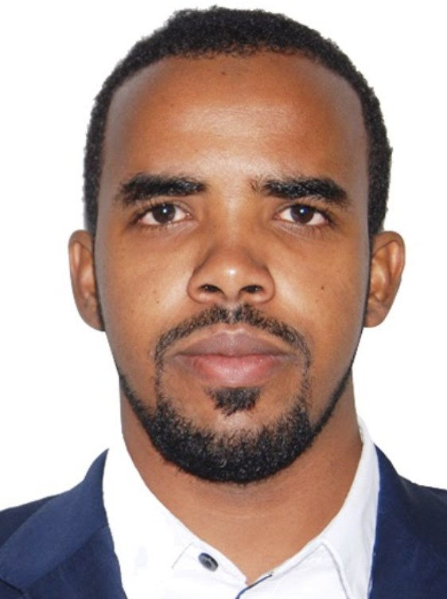
I work at the Regional Centre for Mapping of Resources for Development (RCMRD), an intergovernmental centre serving member states across Eastern and Southern Africa. My days are split between analysis and teaching: building maps and models, then training people to build their own.
Before that I mapped flood risk in Somalia, with the ISTIDAMA Centre for Land and Environmental Governance and the Somalia Disaster Management Agency. I hold a Diploma in GIS and Cartography from the Regional Centre Training Institute and I'm completing a B.Tech in Environmental Resource Management at the Technical University of Kenya.
Tools I reach for: ArcGIS Pro, QGIS, Google Earth Engine, Python, Blender for 3D terrain, KoboToolbox.
Shipton's Camp, 4,200 m
The work
Six projects. Click any map to enlarge it.
-
Conservancies and land degradation, northern Kenya
Mapping community conservancies, sub-landscapes, wildlife corridors and land degradation across Marsabit, Samburu, Isiolo, Baringo and Laikipia, to guide restoration and governance work in the conservancies.
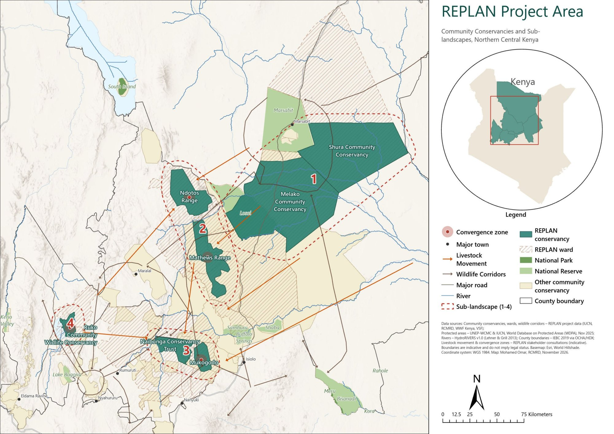
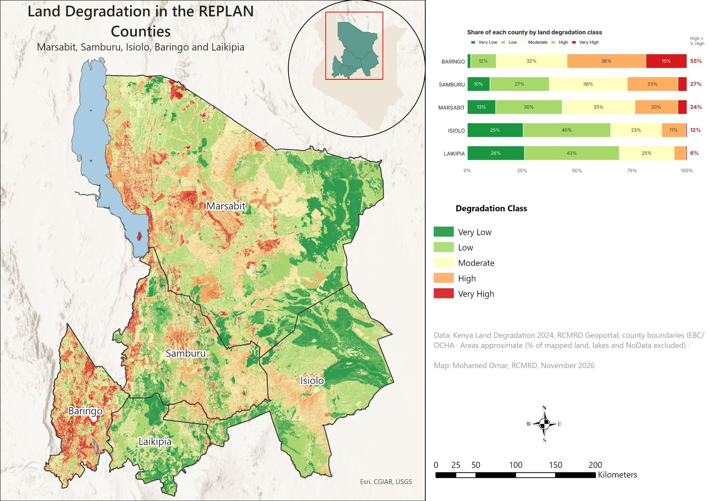
Baringo stands out: about 55% of its mapped land falls in the high or very high degradation classes, against 6% in Laikipia.
ArcGIS Pro, WDPA, RCMRD land degradation data (2024)
-
Flood risk in Beledweyne, Somalia
Where the Shabelle River floods, who lives there and what is exposed. I mapped historical flood-prone areas against elevation, then overlaid settlements and building footprints: many hamlets, villages and parts of Beledweyne town sit inside historical flood corridors.
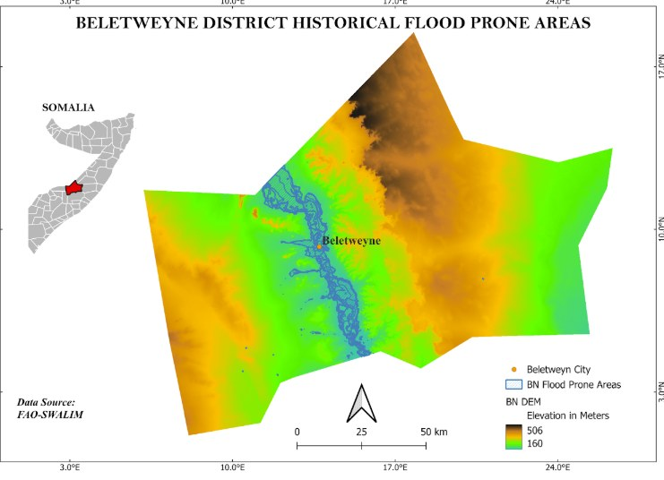
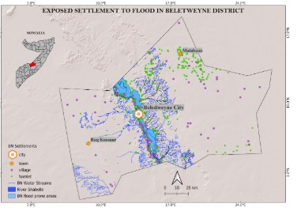
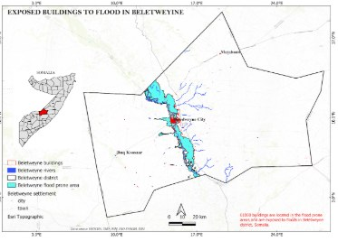
Flood hazard, exposure analysis, FAO-SWALIM data
-
Flood mapping from radar
Using Sentinel-1 SAR, which sees through cloud, to map flood extents during the rains, and training disaster management staff to run the analysis themselves.
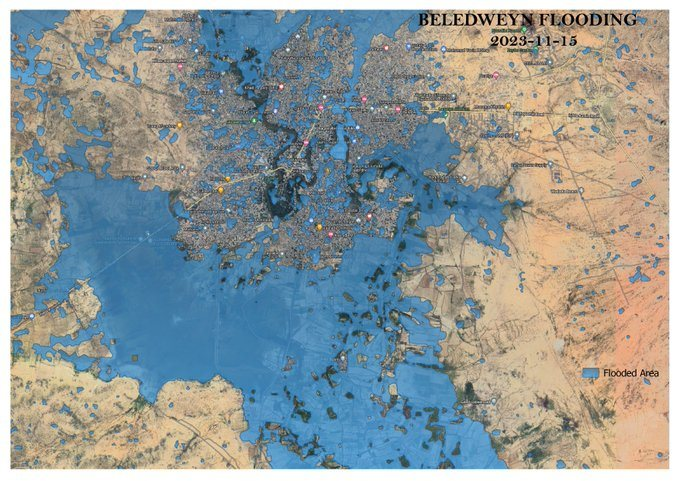
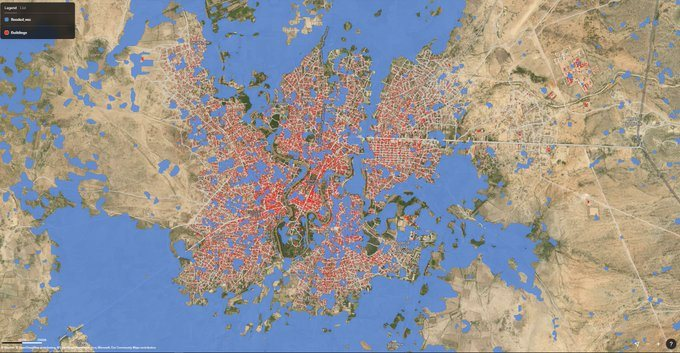
Sentinel-1, Google Earth Engine, capacity building
-
Urban flood hotspots in Nairobi
Flood risk across Nairobi's sub-counties, modelled from SRTM elevation and OpenStreetMap waterways and checked against flood hotspots reported by the county in April 2024.
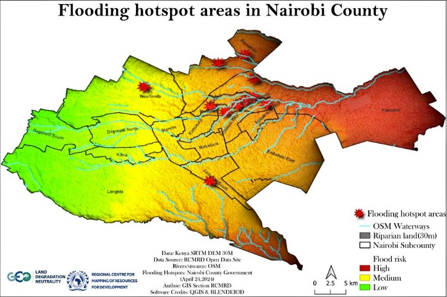
SRTM 30 m, OpenStreetMap, QGIS, Blender
-
Where is Prosopis juliflora spreading?
Species distribution modelling and classification of the invasive mesquite tree locals call mathenge, used to define management zones for control.
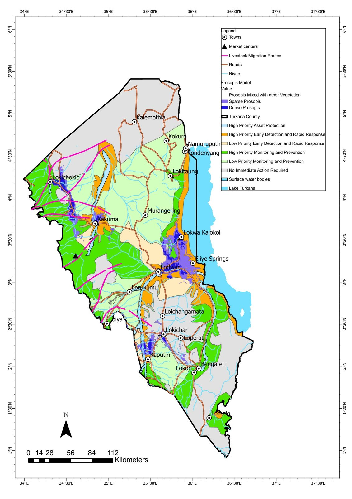
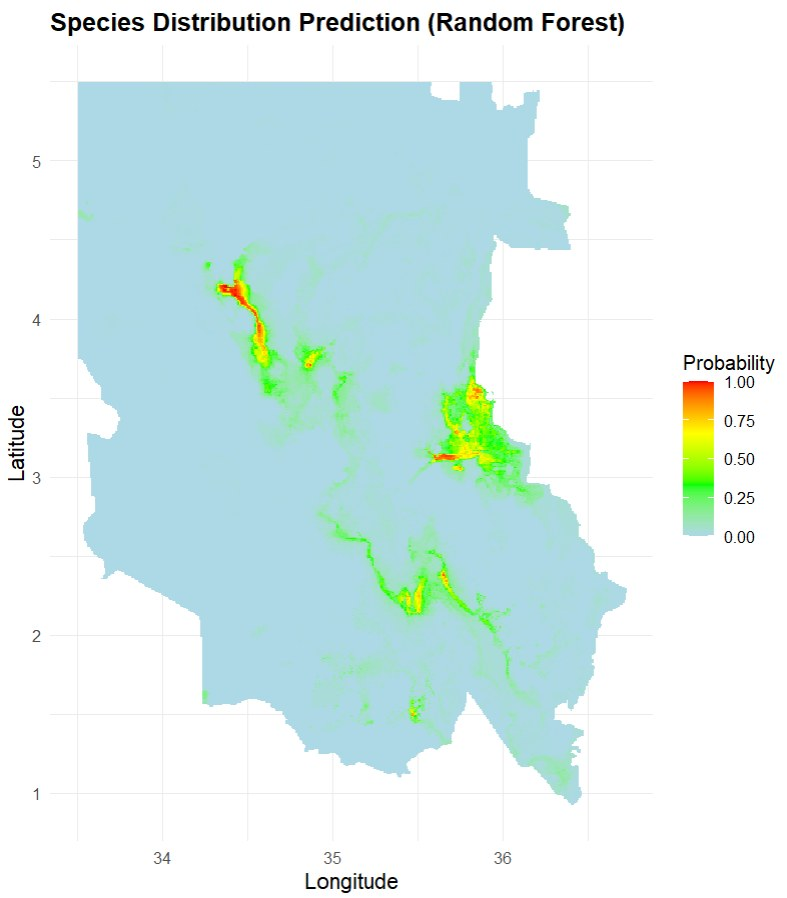
Random forest species distribution model, remote sensing, field data, R
-
Rainwater harvesting sites in Mandera
Multi-criteria site selection for rainwater harvesting in Mandera County, one of Kenya's driest places, combining land cover, elevation, slope, soils, rainfall, drainage and population.
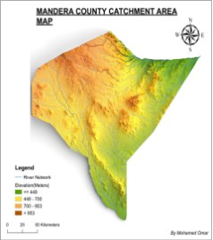
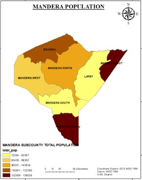
Weighted overlay analysis, Landsat, DEM, QGIS, ArcGIS
Mackinder's Camp, 4,200 m
Where I turned back
My first try at Mt Kenya was a one-day dash up the Naro Moru route. Altitude sickness stopped me here. A week later I went back up the Sirimon route, slower, and reached the summit.
The trail so far
- Feb 2024 – now
- GIS Technical Assistant and Trainer, RCMRD (started on the PASSAGE anticipatory action project)
- Sep 2024 – Apr 2025
- GIS Analyst, Somalia Disaster Management Agency
- Mar–Aug 2024
- Information Systems Analyst, ISTIDAMA Centre for Land and Environmental Governance
- Sep 2023 – Feb 2024
- Geospatial Data Intern, RCMRD
- Dec 2022 – Jun 2023
- Freelance Geospatial Analyst
- Ongoing
- Co-lead, AfriGEO Youth Community of Practice
Talks
RCMRD International Conference 2023, Nairobi. GEO Symposium youth and Indigenous knowledge sessions, Hangzhou. Youth session, 9th AfriGEO Symposium, Dakar.
Training
- Dynamic World Training and Mapathon, RCMRD, World Resources Institute and Google (40 hours, 2023)
- GIS for Climate Action MOOC · IWRM for Climate Resilience · Introduction to Data Analytics · Responsive Web Design
Field notes
#30DayMapChallenge, November 2026: one map a day. I also took part in 2024.
Point Lenana, 4,985 m
You made it
The morning I reached this summit, the fog was so thick I could see about twenty metres. If you're working on something where maps can help you see further, I'd like to hear about it.
mohamedabsiyee@gmail.com
LinkedIn @absiyejunior GitHub
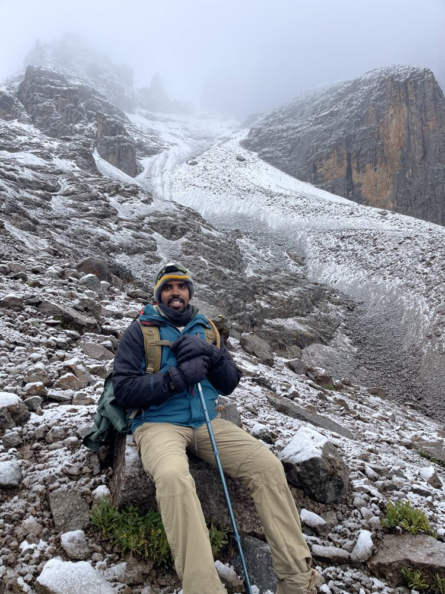